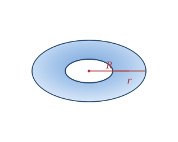

A torus is the ring-shaped solid formed by spinning a circle around an axis that lies in the same plane but does not touch it. The result is a donut. Two radii describe it: the major radius R from the center of the hole to the center of the tube, and the minor radius r, the radius of the tube itself.
Real-world tori include doughnuts, inner tubes, life rings, and O-ring seals.
A torus is a curved solid defined by two radii, R and r (with R > r for a ring).
| Surface | 1 smooth curved surface (no edges/vertices) |
|---|---|
| Major radius | R (hole center to tube center) |
| Minor radius | r (tube thickness) |
Volume V = 2π²Rr²
Surface area SA = 4π²Rr
Take a torus with major radius R = 5 and minor radius r = 2.
V = 2π²Rr² = 2π²(5)(4) = 40π² ≈ 394.78
SA = 4π²Rr = 4π²(5)(2) = 40π² ≈ 394.78
The torus is the geometry behind tokamaks — the donut-shaped chambers that fusion reactors use to trap superheated plasma in a magnetic field, keeping it away from the walls.